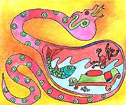
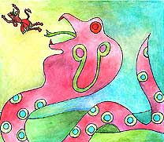

<html>
<!-- Mirrored from www.damodara.de/espaniol/html/jiva_tattva/Hanuman/Hanuman_07.htm by HTTrack Website Copier/3.x [XR&CO'2013], Sun, 23 Feb 2014 09:45:01 GMT -->
<head>
<title>El Monstruo Marino</title>
<meta http-equiv="Content-Type" content="text/html; charset=iso-8859-1">
</head>

<body bgcolor="#FFFFFF" text="#000000">
<table width="45%" border="0" cellspacing="15" cellpadding="0" align="center" bordercolor="#FFFFFF" bgcolor="#FFFFFF" height="1170">
  <tr> 
    <td width="419" height="232" valign="top"> 
      <blockquote>
        <div align="center"> 
          <p align="center"><font face="Comic Sans MS"><o:p></o:p>Hanuman aterriz&oacute; 
            con un gran &iexcl;THUMP!, y de pronto se dio cuenta que estaba sentado 
            en algo muy suave, mir&oacute; hacia abajo&#133; &iexcl;estaba sentado 
            en una cama! Hanuman estaba flotando dentro del est&oacute;mago del 
            monstruo marino, entonces, empez&oacute; a curiosear en la oscuridad 
            y vio pedazos de m&aacute;stiles y de barcos que hab&iacute;an zozobrado 
            tiempo atr&aacute;s, hab&iacute;an tambi&eacute;n esqueletos y toda 
            una variedad de cosas que el monstruo hab&iacute;a tragado.</font></p>
          <p><font face="Comic Sans MS" size="3">Debo salir de ac&aacute; -pens&oacute; 
            Hanuman- mirando a su alrededor. Entonces tuvo una grandiosa idea.</font></p>
        </div>
      </blockquote>
    </td>
  </tr>
  <tr> 
    <td valign="top" height="15"> 
      <div align="center"> 
        <p><a href="../../../images/galeria/colores/radha%20m%20gopal/index.html"></a></p>
        <p><font face="Comic Sans MS" color="#000000" size="2"><b>En el estomago 
          del gran monstruo</b></font></p>
      </div>
    </td>
  </tr>
  <tr> 
    <td height="258" valign="top"> 
      <blockquote> 
        <div align="center"> 
          <p><font face="Comic Sans MS" size="3">Hanuman se volvi&oacute; tan 
            peque&ntilde;o como pudo, y volando dentro del est&oacute;mago del 
            monstruo, le hac&iacute;a cosquillas por los lados, entonces el monstruo 
            empez&oacute; retorcerse y moverse, muerto de la risa.</font></p>
          <p><font face="Comic Sans MS" size="3">&iexcl;Hoo, hoo, ha, ha! &iexcl;detente 
            por favor! -dec&iacute;a el monstruo, mientras re&iacute;a- &iexcl;Tengo 
            muchas cosquillas y si me ri&oacute; mucho, voy a estornudar! Pero 
            Hanuman sigui&oacute; haci&eacute;ndole cosquillas, entonces, el monstruo 
            no pudo contenerse m&aacute;s. Creo, creo que voy a &#133; Ahhh, Ahhh, 
            Chooooo! -estornud&oacute; el monstruo-. Abri&oacute; su enorme boca 
            y record&oacute; que Hanuman se supon&iacute;a estaba dentro, pero 
            era muy tarde porque &eacute;l hab&iacute;a salido disparado y volaba 
            ya hacia la ciudad de Lanka.</font></p>
        </div>
      </blockquote>
 
   </td>
  </tr>
  <tr> 
    <td height="92" valign="top"> 
      <div align="center"> </div>
      <div align="center"> 
        <p><a href="../../../images/galeria/colores/radha%20m%20gopal/index.html"></a></p>
        <p><font face="Comic Sans MS" size="2"><b>Hanuman sali&oacute; de la boca 
          del gran monstruo</b></font></p>
      </div>
    </td>
  </tr>
  <tr> 
    <td height="45" valign="top" bgcolor="#FFFFFF"> 
      <div align="center"><font face="Comic Sans MS"><a href="Hanuman_06.html"></a><a href="Hanuman.html"></a> 
        <a href="Hanuman_08.html"></a></font></div>
    </td>
  </tr>
</table>
<p>&nbsp;</p>
<p>&nbsp;</p>
</body>
<!-- Mirrored from www.damodara.de/espaniol/html/jiva_tattva/Hanuman/Hanuman_07.htm by HTTrack Website Copier/3.x [XR&CO'2013], Sun, 23 Feb 2014 09:45:03 GMT -->
</html>
